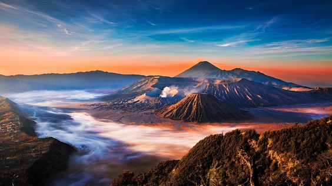
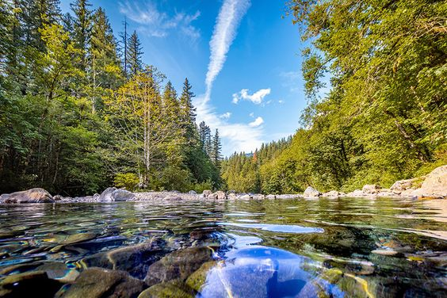
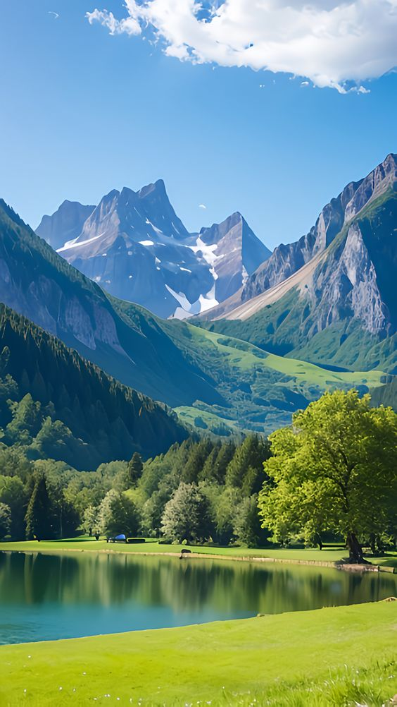
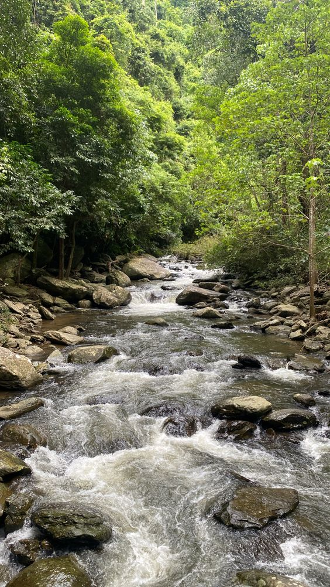

Galeri Fotografi Alam

air terjun
Air terjun adalah formasi geologi dari arus air yang mengalir melalui suatu formasi bebatuan yang mengalami erosi dan jatuh ke bawah dari ketinggian.
Lihat Detail

gunung
Gunung adalah bukit yang sangat besar dan tinggi, biasanya tingginya lebih dari 600 meter.
Lihat Detail

sungai
Sungai, kali, atau wai (disebut juga sebagai bengawan; bahasa Inggris: river) adalah aliran air di permukaan besar dan berbentuk memanjang yang mengalir secara terus-menerus dari hulu (sumber) menuju hilir (muara)
Lihat Detail